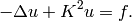
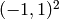
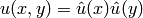
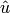
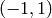

Boundary Layer (Elliptic)¶
Git reference: Benchmark layer-boundary.
This example is a singularly perturbed problem with known exact solution that exhibits a thin boundary layer, that the reader can use to perform various experiments with adaptivity for problems with boundary layers. The sample numerical results presented below imply that:
- one should always use anisotropically refined meshes for problems with boundary layers,
- hp-FEM is vastly superior to h-FEM with linear and quadratic elements,
- one should use not only spatially anisotropic elements, but also polynomial anisotropy (different polynomial orders in each direction) for problems in boundary layers.
Equation solved: Poisson equation
(1)
Domain of interest: Square .
Exact solution:

where  is the exact solution of the 1D singularly-perturbed problem

in  with zero Dirichlet boundary conditions. This solution has the form
![\hat u (x) = 1 - [exp(Kx) + exp(-Kx)] / [exp(K) + exp(-K)];](../../../_images/math/079f8eb16e32b28ff4204b9baed38234f4ebac9d.png)
Right-hand side: Calculated by inserting the exact solution into the equation. Here is the code snippet with both the exact solution and the right-hand side:
// Solution to the 1D problem -u'' + K*K*u = K*K in (-1,1) with zero Dirichlet BC.
double uhat(double x) {
return 1. - (exp(K*x) + exp(-K*x)) / (exp(K) + exp(-K));
}
double duhat_dx(double x) {
return -K * (exp(K*x) - exp(-K*x)) / (exp(K) + exp(-K));
}
double dduhat_dxx(double x) {
return -K*K * (exp(K*x) + exp(-K*x)) / (exp(K) + exp(-K));
}
// Exact solution u(x,y) to the 2D problem is defined as the
// Cartesian product of the 1D solutions.
static double sol_exact(double x, double y, double& dx, double& dy)
{
dx = duhat_dx(x) * uhat(y);
dy = uhat(x) * duhat_dx(y);
return uhat(x) * uhat(y);
}
// Right-hand side.
double rhs(double x, double y) {
return -(dduhat_dxx(x)*uhat(y) + uhat(x)*dduhat_dxx(y)) + K*K*uhat(x)*uhat(y);
}
The weak forms are very simple and they are defined as follows. The only thing worth mentioning here is that we integrate the non-polynomial right-hand side with a very high order for accuracy:
// Weak forms.
template<typename Real, typename Scalar>
Scalar bilinear_form(int n, double *wt, Func<Scalar> *u_ext[], Func<Real> *u, Func<Real> *v, Geom<Real> *e, ExtData<Scalar> *ext)
{
return int_grad_u_grad_v<Real, Scalar>(n, wt, u, v) + K*K * int_u_v<Real, Scalar>(n, wt, u, v);
}
template<typename Real, typename Scalar>
Scalar linear_form(int n, double *wt, Func<Scalar> *u_ext[], Func<Real> *v, Geom<Real> *e, ExtData<Scalar> *ext)
{
return int_F_v<Real, Scalar>(n, wt, rhs, v, e);;
}
// Integration order for linear_form_0.
Ord linear_form_ord(int n, double *wt, Func<Ord> *u_ext[], Func<Ord> *v, Geom<Ord> *e, ExtData<Ord> *ext)
{
return 24;
}
The numerical results follow:
Solution:

Below we present a series of convergence comparisons. Note that the error plotted is the true approximate error calculated wrt. the exact solution given above.
Isotropic refinements¶
Let us first compare the performance of h-FEM (p=1), h-FEM (p=2) and hp-FEM with isotropic refinements:
Final mesh (h-FEM, p=1, isotropic refinements):

Final mesh (h-FEM, p=2, isotropic refinements):
Final mesh (hp-FEM, isotropic refinements):

DOF convergence graphs:

CPU convergence graphs:

Anisotropic refinements¶
Next we compare the performance of h-FEM (p=1), h-FEM (p=2) and hp-FEM with anisotropic refinements:
Final mesh (h-FEM, p=1, anisotropic refinements):

Final mesh (h-FEM, p=2, anisotropic refinements):
Final mesh (hp-FEM, anisotropic refinements):

DOF convergence graphs:

CPU convergence graphs:
h-FEM (p=1): comparison of isotropic and anisotropic refinements¶
DOF convergence graphs:

CPU convergence graphs:

h-FEM (p=2): comparison of isotropic and anisotropic refinements¶
DOF convergence graphs:
CPU convergence graphs:
hp-FEM: comparison of isotropic and anisotropic refinements¶
In the hp-FEM one has two kinds of anisotropy – spatial and polynomial. In the following, “iso” means isotropy both in h and p, “aniso h” means anisotropy in h only, and “aniso hp” means anisotropy in both h and p.
DOF convergence graphs (hp-FEM):

CPU convergence graphs (hp-FEM):
The reader can see that enabling polynomially anisotropic refinements in the hp-FEM is equally important as allowing spatially anisotropic ones.